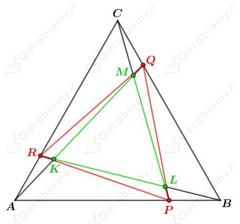
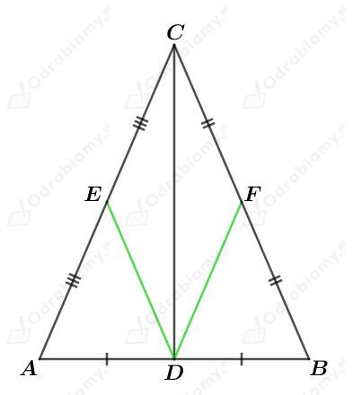
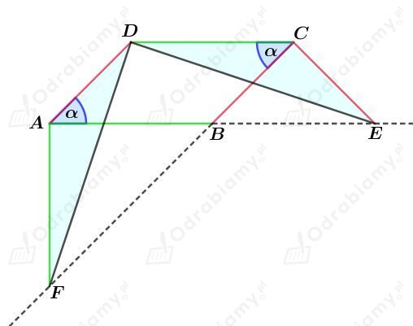
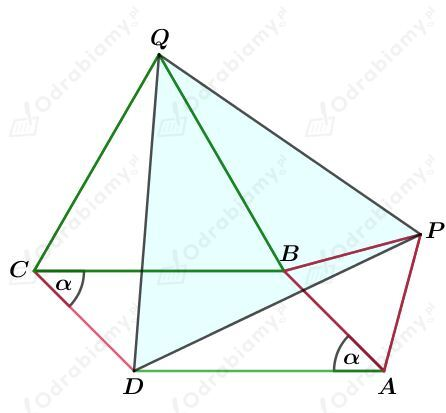
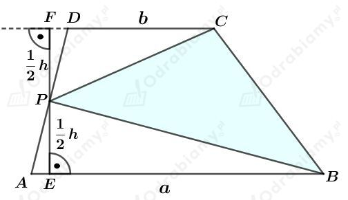
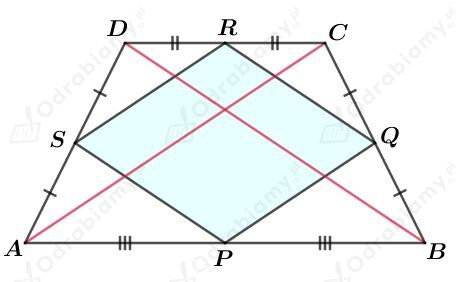

Dany jest równoległobok ABCD.
Punkt E jest środkiem boku BC, czyli |BE|=|CE|.
Zauważmy, że:
ponieważ są to kąty wierzchołkowe.
Dodatkowo,
bo są kątami naprzemianległymi, a więc również:
Mamy:
a więc trójkąty BEF i CDE są przystające na mocy cechy przystawania KBK. Ich pola zatem są równe.
Mamy:
Uzasadniliśmy, że pola trójkąta AFD i równoległoboku ABCD są równe.
Rysunek:

Punkty P, Q, R obrano na bokach trójkąta równobocznego ABC tak, że |AP|=|BQ|=|CR|.
Stąd wiemy, że |PB|=|CQ|=|AR|.
Na mocy cechy przystawania BKB trójkąty APR, BQP i CRQ są przystające. Stąd mamy |RP|=|PQ|=|QR|, zatem trójkąt PQR jest trójkątem równobocznym.
Punkty K, L, M są punktami przecięcia odcinków AQ, BR i CP.
Wiemy, że |AQ|=|PC|=|BR|.
Na mocy cechy przystawania BKB stwierdzamy, że trójkąty APC, BQA i CRB są przystające, co daje nam:
oraz
Stąd mamy:
i dalej:
czyli trójkąt KLM jest trójkątem równobocznym.
Rysunek:

Na mocy cechy podobieństwa BKB trójkąty DAE i BAC są podobne.
Skoro |AE|=1/2|AC|, to również |DE|=1/2|BC|.
Na mocy cechy podobieństwa BKB trójkąty DBF i ABC są podobne.
Skoro |BF|=1/2|BC|, to również |DF|=1/2|AC|.
Z treści zadania wiemy, że |DE|=|DF| otrzymujemy |BC|=|AC|.
Stąd trójkąt ABC jest trójkątem równoramiennym.
Rysunek:

Z treści zadania wiemy, że
oraz
Zauważmy, że kąty ∢DCB i ∢EBC są naprzemianległe, zatem
Zauważmy, że kąty ∢ABF i ∢EBC są kątami wierzchołkowymi, zatem
Skoro trójkąt ABF jest równoramienny, to
Skoro trójkąt BEC jest równoramienny, to
Zatem
czyli równieź
Na mocy cechy przystawania BKB uzasadniliśmy, że trójkąty DAF i ECD są przystające.
Rysunek:

Na bokach AB i BC równoległoboku ABCD zbudowano trójkąty równoboczne.
Niech 𝛼 będzie kątem ostrym tego równoległoboku. Zatem
Wyznaczmy miarę kąta ∢PBQ. Rozważając kąt pełny przy punkcie B mamy:
Zauważmy, że również:
oraz
Zatem trójkąty DAP, PBQ i CDQ są trójkątami przystającymi na mocy cechy przystawania BKB.
Otrzymujemy zatem:
Czyli uzasadniliśmy, że trójkąt PQD jest trójkątem równobocznym.
Dany jest trapez o podstawach długości a i b oraz o wysokości długości h.
Rysunek:

Wyznaczmy pole trójkąta PBC. Mamy:
Uzasadniliśmy, że pole trójkąta BPC jest dwa razy mniejsze od pola trapezu ABCD.
Rysunek:

Dany jest trapez równoramienny ABCD. Punkty P, Q, R i S są środkami boków tego trapezu.
Przekątne w trapezie równoramiennym mają równe długości, czyli:
Odcinek PQ łączy środki boków AB i BC trójkąta ABC, czyli
Odcinek QR łączy środki boków BC i CD trójkąta BCD, czyli
Odcinek RS łączy środki boków CD i DA trójkąta CDA, czyli
Odcinek SP łączy środki boków DA i AB trójkąta DAB, czyli
Zatem otrzymujemy:
czyli uzasadniliśmy, że czworokąt PQRS jest rombem.
Na czworokącie ABCD opisano okrąg. Z własności czworokątów wpisanego w okrąg mamy:
Zauważmy, że:
Dodatkowo, z treści zadania wiemy, że:
Zatem trójkąty LAK i DCB są przystające na mocy cechy przystawania BKB.
Stąd wiemy, że
Kąty wpisane oparte na tym samym łuku mają równe miary, czyli
czyli mamy:
Powyższe kąty są kątami odpowiadającymi, czyli proste AC i KL są równoległe.